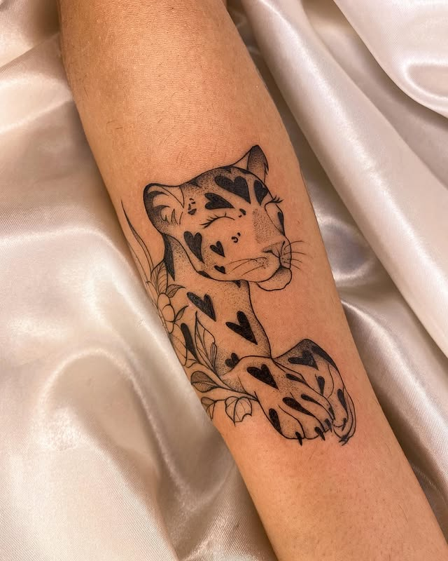
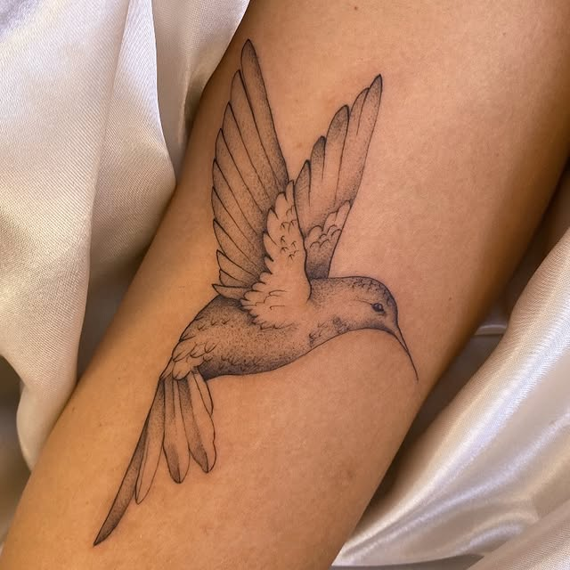
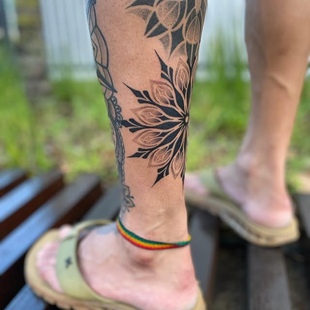
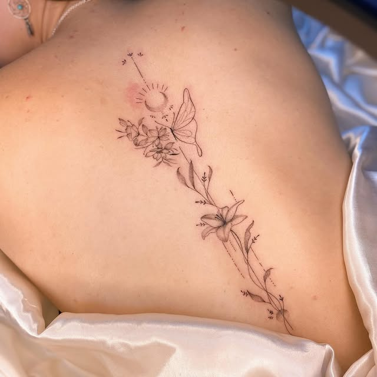
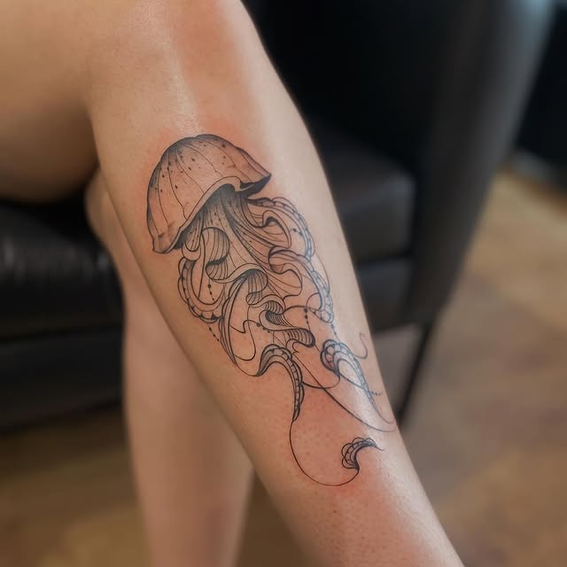
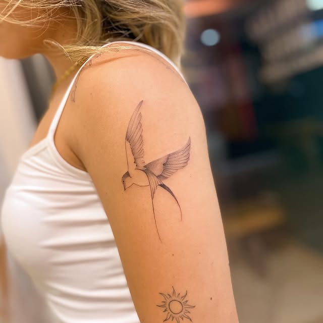
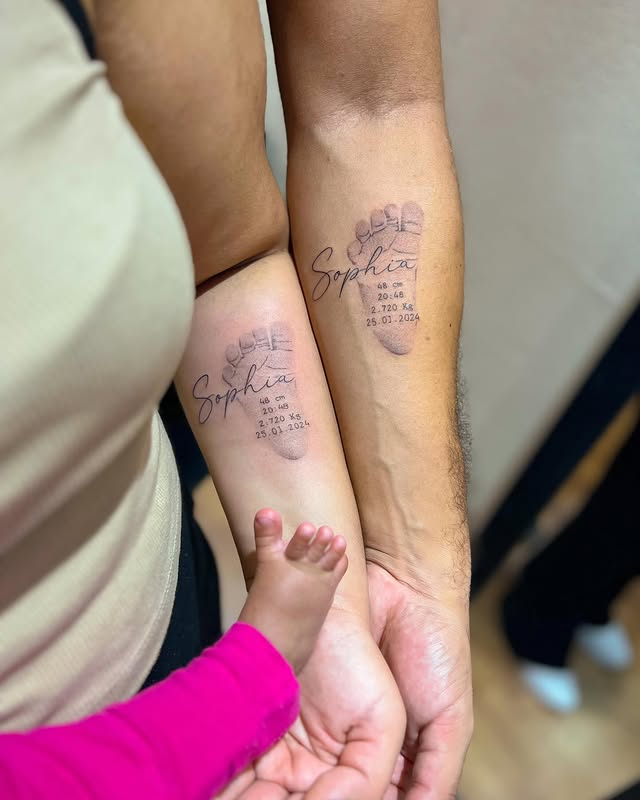
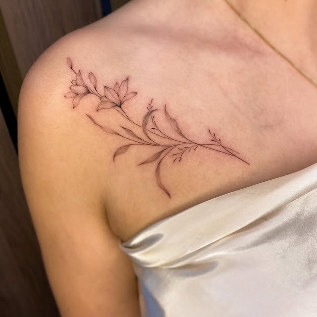
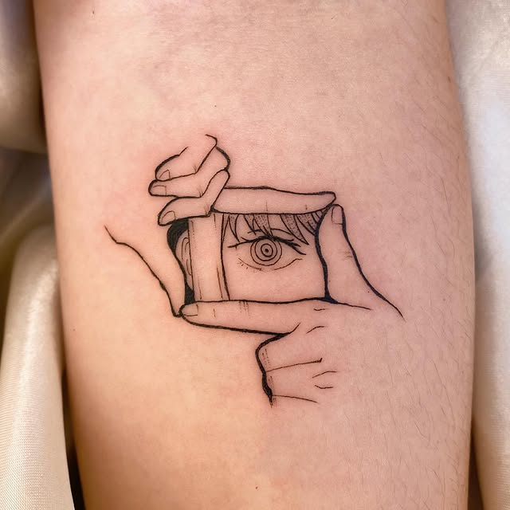

Tatuagem autoral e personalizada com a Cris Sakamoto. Cada desenho é criado do zero pra você, em estúdio privativo. A agenda está aberta.

Portfólio
Tatuagens feitas pela Cris, direto do estúdio. Fine line, pontilhismo e traço delicado — fauna, flora e desenhos personalizados.

Beija-flor · pontilhismo
Mandala · dotwork
Floral · fine line
Água-viva · sketch
Andorinha · fine line
Pezinhos · família
Galho floral · delicado
Linework autoralEstilos
Cada tatuagem é autoral e personalizada. Esses são os traços que mais aparecem no trabalho dela — sempre adaptados à sua ideia.
Sombras e formas construídas ponto a ponto — mandalas, animais e desenhos com profundidade e textura.
Traço fino e delicado para flores, animais e desenhos discretos que envelhecem com elegância.
Você traz a ideia, a Cris desenha do zero. Cada peça é única, pensada pro seu corpo e pra sua história.
Como funciona
Você manda referências e a região do corpo pelo WhatsApp. A Cris entende o que você quer.
Ela cria o desenho do zero, só pra você, e ajusta junto até ficar do seu jeito.
Sessão em ambiente reservado, com todo o cuidado de higiene e material descartável.
Datas disponíveis agora. É só escolher o melhor dia e garantir o seu horário.
Reputação
O Instagram da Cris reúne mais de 27 mil seguidores que acompanham cada nova tatuagem. Num mercado movido a referência visual, é o portfólio que fala por ela.
Acompanhe
Veja o portfólio completo, novidades e flashes disponíveis direto no Instagram da Cris.
Seguir no Instagram →Contato
A agenda está aberta. Manda sua ideia pelo WhatsApp que a Cris te responde com as datas e tira todas as suas dúvidas.
Falar no WhatsApp →